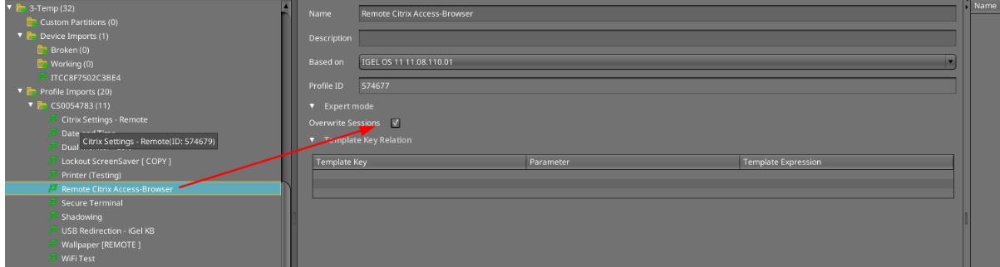
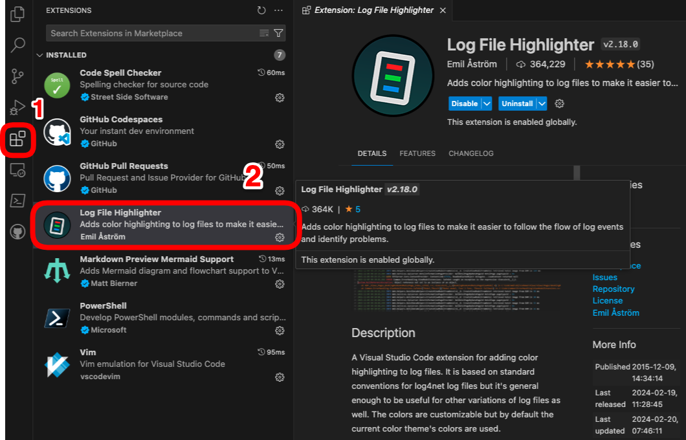
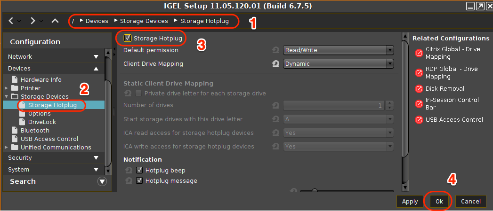
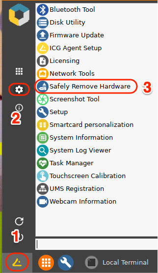
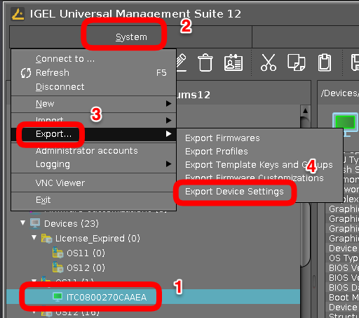
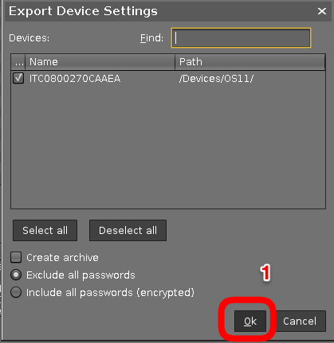
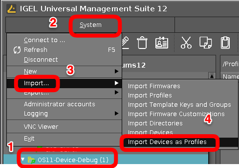
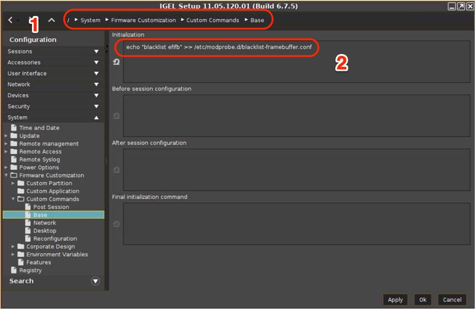
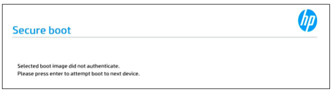

HOWTO Collect Hardware Information for a Device
Collect Logs for IGEL Support
-
KB: UMS - Save Support Information / Send Log Files to Support
-
KB: Debugging / How to Collect and Send Device Log Files to IGEL Support
Command to run to collect logs, /tmp/tclogs.zip, for IGEL support.
1 | |
NOTE: Details on UMS Logs
Troubleshooting Links
Recommendation: Do not enable "Overwrite Session" on any profiles without explicit request from IGEL support
- Profile(s) should
NEVERhaveOverwrite Sessionsset on it! - For example, enabling
Overwrite Sessionsin a profile means thatonlythose settings will apply for all registry keys that have multiple session (end in a % in the registry).

Steps to collect the data
- Format a USB thumb drive on your PC (FAT or NTFS)
- Copy the collection script (see below) to USB thumb drive
- Enable Storage Hotplug (Devices > Storage Devices > Storage Hotplug)
- Plug USB thumb drive in IGEL OS device (auto mounted in /media folder)
- Open terminal window (as Root)
- Run collection script
- Safely remove USB thumb drive (Start > System > Safely Remove Hardware)
- Send zip file to your contact
Collection Script
Collection script (collect_data.sh) to copy onto thumb drive
1 2 3 4 5 6 7 8 9 10 11 12 13 14 15 16 17 18 19 20 21 22 23 24 25 26 27 28 29 30 31 32 33 34 35 36 37 38 39 40 41 42 43 44 45 46 47 48 49 50 51 52 53 54 55 56 57 58 59 60 61 62 63 | |
NOTE: Additional logging notes:
-
AVD log collection OS 11:
sessions.wvd%.options.client-log-levelset toDebug -
AVD log collection OS 12:
System > Registry > app > avd > sessions > avd0 > options > client-log-levelset toDebug -
Citrix log collection:
ica.logging.debugset toEnabled -
Zoom VDI log collection: Using the VDI log tool
Search for string (audio) in data_dump files
- Create a listing of files that has string
1 | |
- Create a file with content of search results by file name
1 | |
Use Microsoft Visual Studio Code to View Log Files
- Install Microsoft Visual Studio Code on your PC
- Add Extension to Microsoft Visual Studio Code Log File Highlighter
- Un-Zip log files
- Open the folder in Microsoft Visual Studio Code
- Search for string in Microsoft Visual Studio Code, such as
audio

Enable Storage Hotplug (Devices > Storage Devices > Storage Hotplug)

Run Collection Script (Open Terminal Window)
1 2 3 4 5 6 7 8 9 10 11 12 | |
Safely remove USB thumb drive (Start > System > Safely Remove Hardware)

Create Profile with all settings for a Device
These device profiles can be used to see all settings for a device and can also be used to compare two devices.
The following steps will:
- Export device settings as a profile
- Import device settings as a profile
  
Tips for prepping PC for IGEL OS install
- Make sure BIOS is at latest version. Check Linux Vendor Firmware Service (LVFS). IGEL OS 11.08.XXX or newer supports LVFS for BIOS from UMS
- Make sure BIOS is set back to default settings.
- Check for and apply BIOS settings for Ubuntu 18.04.
Video driver and booting (blacklist framebuffer driver)
Framebuffer drivers are generally buggy and poorly-supported, and cause suspend failures, kernel panics and general mayhem. For this reason we never load them automatically.
If PC firmware has a Legacy Boot option, it might interfere with the kernel’s ability to use the framebuffer during boot.
The kernel may hang on framebuffer driver. As first step in debugging, blacklist the framebuffer driver in file /etc/modprobe.d/blacklist-framebuffer.conf
For example, add the following entry to the System/Firmware Customization/Custom Commands/Base Initialization section of IGEL Setup:
echo “blacklist efifb” >> /etc/modprobe.d/blacklist-framebuffer.conf
Save the change and reboot without the “Force VESA driver” option being set.

IGEL OS Boot Menu Explained – Video
Try VESA only boot
Steps:
- Reboot device
- Keep hitting Esc
- Select >
VESA only boot
Improve sound quality for internal speakers or HDMI / DP
Setting to improve sound quality:
System > Registry > multimedia.pulseaudio.daemon.resample-method > speex-float-3
Touchscreen debugging
Obtain the touchscreen vendor information from the following script:
1 2 3 4 5 6 7 8 9 10 11 12 13 14 15 16 17 | |
Access terminal console, terminal log screen, or setup
- Access to terminal console: Ctrl+Alt+F12
- Switch back to GUI: Ctrl+Alt+F1
- Access terminal log screen: Ctrl+Alt+F10
- Access IGEL setup: Ctrl+Alt+S
Extended Logging With Syslog, Tcpdump and Netlog
The IGEL Linux Registry offers a number of extended logging options that can help customers, Support and PreSales debug system and network issues.
IGEL - KB - Extended Logging With Syslog, Tcpdump and Netlog
Steps to update firmware from USB drive
- Download OS 11 -> Firmware Updates -> lxos_[VERSION]_public.zip
- Format USB Drive on PC (FAT)
- Unzip lxos_[VERSION]_public.zip to USB drive
- Configure IGEL OS to take new firmware from USB drive
- Run update
1. Configure at least one hotplug USB device:
setparam devices.hotplug.usb-storage.numdevices 1
2. Apply your changes:
kill_postsetupd
3. Connect the USB storage device to the device.
4. Wait for the USB storage device to be mounted automatically.
5. Determine the mount point:
ls /media/
6. Configure the update parameters:
setparam update.protocol file
setparam update.file.path /media/<name of USB storage device>
7. Start the update process in the / directory using the command update
update
Sample script:
1 2 3 4 5 6 7 8 9 | |
Hardware Notes
-
HP Laptops - Selected Boot Image Did Not Authenticate Message Appears before Windows Starts

After powering on the computer, the following message may appear prior to booting:
Selected boot image did not authenticate.This occurs when using a 3rd party UEFI software tool (such as a bootloader or endpoint encryption software), or when using hardware with an option ROM that is not appropriately signed per Microsoft’s Secured-core PC requirements.
Microsoft’s Secured-core PC requirements no longer allow computers to run UEFI code signed using the Microsoft 3rdParty UEFI CA. As such, HP disables the option to use this Certificate of Authority (CA) by default. Microsoft’s decision to disallow authentication for software signed this way is meant to address potential security risks with 3rd party bootloaders by limiting the code that a given computer is allowed to execute before boot.
Computers that do not support Modern Standby, or that do not have Intel vPro or AMD Ryzen Pro technology, are not affected. Computers that were ordered as Linux-ready are not affected, since these need to use a 3rdparty bootloader (e.g. Grub).
Note: Customers can order affected computers with the third-party key enabled by contacting their HP representative, who can add the appropriate option to their BOM.
The "Enable MS UEFI CA key" BIOS setting controls the ability to utilize 3rd-party bootloaders.
Perform the following steps to enable the Microsoft UEFI CA key. This setting can be changed by performing the following steps:
-
Enter the System BIOS by pressing F10 at power on
-
Navigate to the Security tab
-
Select the BIOS Sure Startoption
-
Uncheck Sure Start Secure Boot Keys Protection
-
Press Esc to exit the BIOS, saving changes
-
When prompted for a 4-digit PIN to confirm the BIOS setting changes, enter the PIN shown onscreen
-
Restart the PC and enter the System BIOS again
-
Navigate to the Security tab again
-
Select the Secure Boot Configuration option
-
Check Enable MS UEFI CA key
-
Press Esc to return to the previous menu
-
Select the BIOS Sure Start option again
-
Check Sure Start Secure Boot Keys Protection
-
Press Esc to exit the BIOS
-
Save changes
-
-
Secured-Core PCs: Microsoft 3d-Party UEFI Certificate for Secure Boot
-
Dynabook Setup TECRA A40-J (PMM10U) || Version: PMM10U-00101U
-
Lenovo - BIOS simulator shows how to navigate the BIOS for each hardware type.
-
Lenovo - ThinkLMI - Lenovo BIOS Setup using Linux WMI - Deployment Guide
-
Laptop Docking Station - HP USB-C Dock G5. Link to HP's web site -- LINK. This device will work for other laptops that support USB-C docks. IGEL UMS supports firmware updates to this dock.
1 2 3 4 5 6 7 8 9 10 11 12 13 14 15 16 17 18 19 20 21 22 23 24 25 26 27 28 29 30 | |
KVM (Keybaord Video Monitor) Switch
- ATEN CS1924m KVM
- Script for KVM:
/etc/igel/kms/kvm-workaround.sh
USB always on (Printer, Scanner, Audio, etc.)
System > Firmware Customization > Custom Commands > Desktop
1 | |